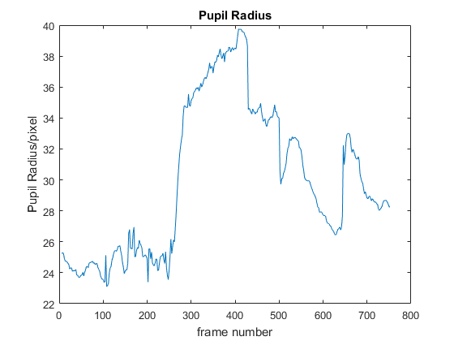
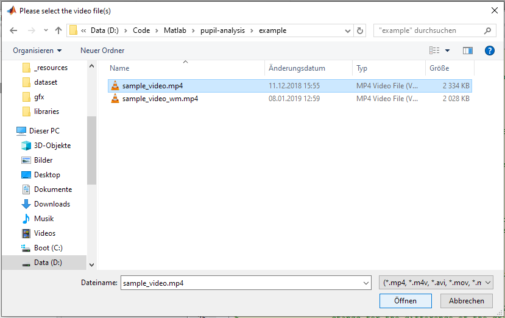
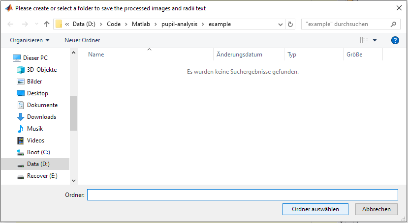
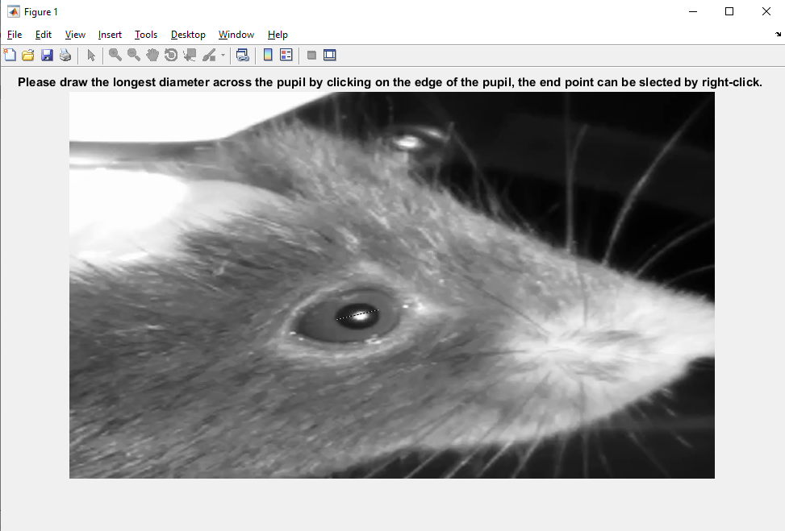

pupilMeasurement
Measure pupil diameter changes from video
Contents
Usage
R = pupilMeasurement()
Optional arguments
- FITMETHOD is the method used to approximate the pupil.
- SPSELECT is the method used to select seed points.
- DOPLOT controls the plotting behaviour.
- THRESVAL is the threshold value for binarizing.
- FRAMEINTERVAL determines the interval between analysed frames.
- VIDEOPATH is the path to the video file(s).
- FILESAVEPATH is the path to the results folder.
- STARTFRAME indicates the first frame to analyse.
- ENHANCECONTRAST controls automated contrast enhancement.
- DOCROP allows to crop the video before analysis.
- SKIPBADFRAMES is used to automatically discard bad frames.
- FILLBADDATA is the method used to fill values from skipped frames.
- SAVELABELEDFRAMES saves labeled frames, if enabled.
- PIXELSIZE specifies the size of a pixel in mm.
Details
pupilMeasurement is used to analyse pupil diameter changes from MP4 video files and store these data to CSV and MAT files.

See Also
Examples
The following examples require the sample videos located in the example folder of this repository.
Analyse a pupillometry video interactively
The following example will illustrate the process of analysing a video interactively.
% Call the main function
pup01 = pupilMeasurement()
Then, use the interactive dialogue box to select the video file sample_video.mp4, which should be located in the subfolder example, within the pupillometry-matlab root directory.

Use the interactive dialogue box to select the same folder for saving the results:

The next stage is to draw the diameter across the pupil. Click on one edge of the pupil and right-click on the opposite edge to confirm.

We have now analysed a video.
pup01 =
cell
[150x2 double]
The process is almost exactly the same to anaylyse multiple videos; simply hold down CTRL in the file selection dialogue box and select as many videos as you like. They will be processed sequentially and you'll be asked to draw the initial diameter by hand for each video.
Analyse pupil diameter with pre-defined parameters and optional tools
% Define parameters fitMethod = 2; spSelect = 'line'; doPlot = true; thresVal = []; frameInterval = 2; videoPath = fullfile(utils.get_rootdir, 'example/sample_video.mp4'); fileSavePath = fullfile(utils.get_rootdir, 'example'); startFrame = 5; enhanceContrast = true; doCrop = true; skipBadFrames = true; fillBadData = 'linear'; saveLabeledFrames = false; pixelSize = []; % Run pupilMeasurement with pre-defined parameters pup02 = pupilMeasurement('fitMethod', fitMethod, 'doPlot', doPlot, ... 'thresVal', thresVal, 'frameInterval', frameInterval, ... 'videoPath', videoPath, 'fileSavePath', fileSavePath, ... 'startFrame', startFrame, 'enhanceContrast', enhanceContrast, ... 'doCrop', doCrop, 'skipBadFrames', skipBadFrames, ... 'fillBadData', fillBadData, 'saveLabeledFrames', saveLabeledFrames, ... 'pixelSize', pixelSize)